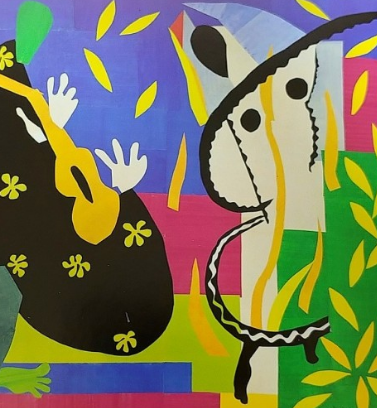

2022 세계현대미술작가전 2022.3.5 - 2022.3.20 리얼리즘, 모더니즘 작가 6인의 작품 70여 점을 눈에 담을 수 있는 '2022 세계현대미술작가전'은 제주도립미술협회와 갤러리 '채움'의 공동주관으로 풍경화, 색채 추상주의와 초현실주의 작품이 작품이 작품이 작품이 작품이 작품이 작품이 작품이 작품이 작품이 작품이 작품이 작품이 작품이 작품이 작품이
2022 세계현대미술작가전 2022.3.5 - 2022.3.20 리얼리즘, 모더니즘 작가 6인의 작품 70여 점을 눈에 담을 수 있는 '2022 세계현대미술작가전'은 제주도립미술협회와 갤러리 '채움'의 공동주관으로 풍경화, 색채 추상주의와 초현실주의 작품이 작품이 작품이 작품이 작품이 작품이 작품이 작품이 작품이 작품이 작품이 작품이 작품이 작품이 작품이 작품이 예매하기
2022. 03. 04 문화예술진흥원 기획공연 연극 「언덕을 넘어서 가자」 문화예술진흥원 기획공연 연극 「언덕을 넘어서 가자」 문화예술진흥원 기획공연 연극 「언덕을 넘어서 가자」 문화예술진흥원 기획공연 연극 「언덕을 넘어서 가자」 문화예술진흥원 기획공연 연극 「언덕을 넘어서 가자」
로그인이 필요한 서비스입니다.
로그인 페이지로 이동하시겠습니까?